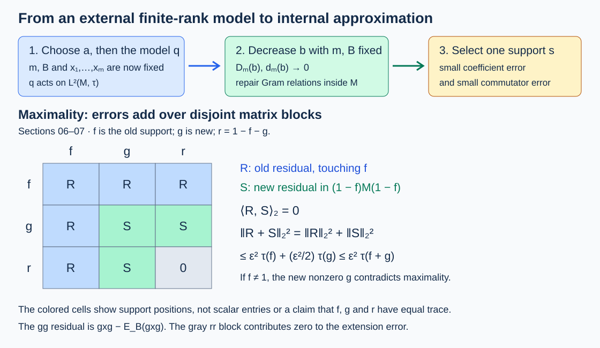

Small-corner construction and finite injectivity
Original lesson by OpenAI Codex, GPT-6 Astra, Ultra. New text and figure: CC0.
An almost invariant finite-rank projection lives on the trace Hilbert space, not inside the algebra. This lesson turns it into an internal matrix corner, then fills the identity by maximality. The construction gives the second proof that a separable injective \(\mathrm{II}_1\) factor is AFD.
For a faithful normal tracial state \(\tau\), write \(H=L^2(M,\tau)\) and \(\|x\|_2^2=\tau(x^*x)\). The ordinary trace and Hilbert–Schmidt norm on \(B(H)\) are denoted by \(\operatorname{Tr}\) and \(\|\cdot\|_{\mathrm{HS}}\). Inner products are linear in the second variable. We use the proved trace-density and product calculus, tracial expectations, and injectivity retractions and corners. The scalar pinching and exact dyadic-containment imports are identified at their points of use.
Selecting a spectral level
Theorem. Let \(N\ne0\) have a faithful normal semifinite trace \(\sigma\), and let finite \(F\subset\mathcal U(N)\) leave a state \(\psi\) invariant under conjugation. The state may be singular. For every \(\varepsilon>0\), some nonzero finite-trace projection \(p\in N\) satisfies
\[ \|p-upu^*\|_{2,\sigma}<\varepsilon\sqrt{\sigma(p)} \qquad(u\in F). \]Neither factoriality nor countability is needed.
We first prove the trace estimates used in the selection. For positive \(h,k\in L^2(N,\sigma)\), put \(P_t(h)=1_{(\sqrt t,\infty)}(h)\). Then
\[ \begin{aligned} \|h-k\|_2^2&\le\|h^2-k^2\|_1,\\ \int_0^\infty\|P_t(h)-P_t(k)\|_2^2\,dt &\le\|h-k\|_2\|h+k\|_2,\\ \int_0^\infty\sigma(P_t(h))\,dt&=\|h\|_2^2. \end{aligned} \tag{SCP.1} \]For the first inequality let \(c=h-k=c_+-c_-\) and \(z=\operatorname{sgn}(c)\). Trace cyclicity gives
\[ \sigma((h^2-k^2)z) =\|c\|_2^2+2\sigma(kc_+)+2\sigma(hc_-)\ge\|c\|_2^2. \]The last two terms are nonnegative by bounded positive truncation and the \(L^2\)-product inequality; \(\|z\|\le1\) bounds the left side by \(\|h^2-k^2\|_1\). This reasoning applies to measurable \(L^2\) operators, since all displayed products are in \(L^1\).
For the second estimate first take finite positive spectral sums \(h=\sum_i\lambda_i e_i\), \(k=\sum_j\mu_j f_j\) with finite-trace positive spectral supports. Add the complementary projections with spectral value zero. For \((i,j)\ne(0,0)\), the finite numbers \(\nu_{ij}=\sigma(e_i f_j e_i)\) are nonnegative. Expanding the trace products expresses the integral as
\[ \sum_{(i,j)\ne(0,0)}|\lambda_i^2-\mu_j^2|\nu_{ij}. \]The corresponding expressions for the two squared norms on the right are the sums with factors \((\lambda_i-\mu_j)^2\) and \((\lambda_i+\mu_j)^2\). Scalar Cauchy–Schwarz proves the bound. This uses two spectral partitions, without assuming that their projections commute.
For general \(h,k\), approximate each by the increasing spectral functions
\[ a_n(s)=\min\{2^n,\,2^{-n}\lfloor2^n s\rfloor\}. \]Their positive supports have finite trace, and they converge in \(L^2\). At each positive level their projections increase to the required level projection, also in \(L^2\), because \(\sigma(P_t(h))\le t^{-1}\|h\|_2^2\). Fatou passes the inequality to the limit. The last identity in (SCP.1) is the scalar layer integral for the spectral trace measure.
Proof of the theorem. Normal states are weak* dense among all states: otherwise separation by a self-adjoint element would give a state value above the supremum of its normal-state values. A nonzero spectral projection arbitrarily near its spectral maximum supports a normal state with value arbitrarily near that maximum, contradicting separation.
For \(n=|F|>0\), consider the convex set of tuples
\[ (\varphi-\varphi\circ\operatorname{Ad}u)_{u\in F} \in\bigoplus_{u\in F}N_* \]as \(\varphi\) ranges over normal states. Weak* approximation to \(\psi\) puts zero in its Banach weak closure, since every test is a finite tuple of elements of \(N\). Hahn–Banach separation then puts zero in its norm closure. Thus, for any \(d>0\), choose \(\varphi\) with summed predual errors below \(d\). The trace-density theorem writes \(\varphi=\sigma(a\,\cdot)\), \(a\ge0\), \(\sigma(a)=1\). With \(h=a^{1/2}\), (SCP.1) gives
\[ \sum_{u\in F}\|h-u^*hu\|_2^2<d,\qquad \|h\|_2=1. \]Hence
\[ \int_0^\infty\sum_{u\in F} \|P_t(h)-u^*P_t(h)u\|_2^2\,dt <2\sqrt{nd},\qquad \int_0^\infty\sigma(P_t(h))\,dt=1. \tag{SCP.2} \]Take \(d=\varepsilon^4/(16n)\). If every nonzero level had summed squared error at least \(\varepsilon^2\sigma(P_t(h))\), integration would contradict (SCP.2). A qualifying level has finite positive trace; conjugation by \(u\) reverses the orientation \(u^*pu\) without changing the norm. For empty \(F\), semifiniteness supplies any nonzero finite-trace projection. \(\square\)
Bounded vectors and scalar pinching
Suppose first that \(M\) is injective with faithful normal tracial state, without a separability assumption. Its ucp retraction \(E:B(H)\to M\) is bimodular. Indeed Schwarz applied to \(m+tb\), where \(m\in M\), has zero constant defect; testing all complex \(t\) forces its linear defect to vanish. Thus \(E(m^*b)=m^*E(b)\), and adjoints give the right identity. Consequently \(\psi=\tau E\) is invariant under every \(L_u\), \(u\in\mathcal U(M)\).
Apply Section 01 in \(B(H)\) with the ordinary trace. For a finite unitary list \(F\) and \(a>0\), it supplies a nonzero finite-rank projection with sufficiently small conjugation errors. Its rank is \(m\). Approximate an orthonormal basis \(\xi_i\) of its range by \(y_i\in M\). For their Gram matrix \(G=[\tau(y_i^*y_j)]\), the corrected columns
\[ x_i=\sum_j y_j(G^{-1/2})_{ji} \]are exactly orthonormal and converge to the \(\xi_i\)'s. They are bounded elements of \(M\), although no uniform operator bound is asserted as \(a\) varies. The rank-one estimate
\[ \|K_{x,x}-K_{\xi,\xi}\|_{\mathrm{HS}} \le(\|x\|_2+\|\xi\|_2)\|x-\xi\|_2, \quad K_{b,c}\eta=b\langle c,\eta\rangle, \]follows by adding \(K_{x-\xi,x}+K_{\xi,x-\xi}\). The strict initial error margin therefore gives
\[ q=\sum_{i=1}^mK_{x_i,x_i},\qquad \sum_{v\in F}\|L_vqL_v^*-q\|_{\mathrm{HS}}^2<a^2m. \tag{SCP.3} \]Choose and retain \(B\ge\max(1,\|x_1\|,\ldots,\|x_m\|)\).
For the rest of this section \(M\) is a separable \(\mathrm{II}_1\) factor. The exact scalar pinching theorem, Theorem 3.1 applies with the irreducible inclusion \(M\subset M\). Its proof uses contained AFD algebras and two successive partition refinements; it does not use injectivity implies AFD.
Pinching lemma. For an orthonormal \(x_1,\ldots,x_m\in M\), finite \(F\subset\mathcal U(M)\), and \(0<b<1\), there are finitely many nonzero orthogonal projections \(f_k\) with
\[ \begin{aligned} \sum_{v\in F}\sum_{i,j} \|f_kx_i^*vx_jf_k-\tau(x_i^*vx_j)f_k\|_2^2 &\le b^2\tau(f_k),\\ \sum_k\tau(f_k)&>1-b^2. \end{aligned} \tag{SCP.4} \]For larger \(b\), use any smaller parameter; for empty \(F\), use \(f_1=1\).
Proof. There are \(Q=|F|m^2\) indexed coefficients, possibly repeated. Apply scalar pinching to the distinct coefficients with tolerance \(b^2/\sqrt Q\). Each indexed coefficient then has squared error below \(b^4/Q\). For a partition atom \(p_k\), let \(A_k\) be the sum of its squared coefficient errors. Orthogonality of diagonal corners gives \(\sum_k A_k<b^4\). Retain the atoms with \(A_k\le b^2\tau(p_k)\). The discarded trace is less than \(b^2\); the retained atoms prove (SCP.4). \(\square\)
Adjoining \(1\) to \(F\) supplies the Gram conditions
\[ \|f_kx_i^*x_jf_k-\delta_{ij}f_k\|_2 \le b\sqrt{\tau(f_k)}. \]This is the \(v=1\) subfamily. The other coefficients retain their dependence on \(v\).
Polar repair with the discarded range included
The following estimates hold in any faithfully tracial finite algebra, without factoriality or separability.
Single-vector repair. Suppose \(f\ne0\), \(0\le\alpha<1/4\), and
\[ \|fx^*xf-f\|_2\le\alpha\sqrt{\tau(f)}. \]There are \(0\ne e\le f\) and \(u\) such that
\[ \begin{gathered} u^*u=e,\quad uu^*\le s_\ell(xf),\quad \|xe-u\|_2^2\le\alpha\tau(e),\\ \tau(f-e)\le\frac{\alpha}{1-\alpha}\tau(e),\quad \tau(f)\le\frac{\tau(e)}{1-\alpha},\quad \|xe-u\|_2^2\le\alpha^2\tau(f). \end{gathered} \tag{SCP.5} \]To prove this, write \(xf=vh\) and take \(e=1_{[1-\sqrt\alpha,1+\sqrt\alpha]}(h)\), using the spectral calculus in \(fMf\). On its complement, \(|h^2-f|\ge\sqrt\alpha(2-\sqrt\alpha)\), so
\[ \tau(f-e)\le\frac{\alpha}{(2-\sqrt\alpha)^2}\tau(f)\le\alpha\tau(f). \]Set \(u=ve\). The pointwise bound \((h-f)^2e\le\alpha e\) gives the first error; \(|t-1|\le|t^2-1|\) for \(t\ge0\) gives the last. Rearranging the trace estimate gives the other bounds. For \(\alpha=0\), take \(e=f,u=xf\). The zero projection case is trivial with \(e=u=0\).
Orthogonal repair. Suppose \(u_i^*u_j=\delta_{ij}f\), \(1\le i,j\le l\), and \(\|y\|\le B\). Assume
\[ \|fy^*yf-f\|_2\le\beta\sqrt{\tau(f)},\qquad \|u_j^*yf\|_2\le\beta\sqrt{\tau(f)}. \]Set \(C=2lB+1\), and require \(0\le\beta<1/(4C)\). There are \(0\ne e\le f\) and \(u\) with
\[ u^*u=e,\quad u_j^*u=0,\quad \|ye-u\|_2^2\le C\beta\tau(e),\quad \tau(f-e)\le\frac{C\beta}{1-C\beta}\tau(e). \tag{SCP.6} \]Also \(\tau(f)\le\tau(e)/(1-C\beta)\).
For the proof set \(P=\sum_j u_ju_j^*\), \(x=(1-P)yf\), and \(\alpha=C\beta\). The ranges are orthogonal, so
\[ \|Pyf\|_2^2=\sum_j\|u_j^*yf\|_2^2\le l\beta^2\tau(f). \]In particular \(\|x-yf\|_2\le l\beta\sqrt{\tau(f)}\) for \(l\ge1\). Expanding \(x^*x-fy^*yf\) and using \(\|x\|,\|yf\|\le B\) bounds \(\|x^*x-f\|_2\) by \(C\beta\sqrt{\tau(f)}\); for \(l=0\) this is immediate. Apply (SCP.5). Its polar range is orthogonal to every old range. More importantly,
\[ \|ye-u\|_2^2 =\|Pye\|_2^2+\|xe-u\|_2^2 \le(l\beta^2+\alpha^2)\tau(f). \]If \(\beta>0\), the self-Gram condition gives \(B^2\ge1-\beta>3/4\), hence \(C^2\ge l\). Therefore the last bound is at most \(2\alpha^2\tau(e)/(1-\alpha)\le\alpha\tau(e)\). If \(\beta=0\), use \(u=yf,e=f\). This proves every assertion.
One may take \(B=\|y\|\). If a larger bound is used in the denominators, the smallness condition must use that same larger bound. Section 08 gives a counterexample to mixing the two conventions.
Repairing a whole Gram matrix
Fix \(m\) and \(B\ge1\). There is a positive modulus \(D_m(b)\to0\), for sufficiently small \(b>0\), such that
\[ \|fx_i^*x_jf-\delta_{ij}f\|_2\le b\sqrt{\tau(f)}, \quad \|x_i\|\le B \]implies the existence of \(e\le f\) and \(w_1,\ldots,w_m\) satisfying
\[ \begin{gathered} w_i^*w_j=\delta_{ij}e,\\ \tau(f-e)\le D_m(b)^2\tau(e),\\ \|x_ie-w_i\|_2\le D_m(b)\sqrt{\tau(e)}. \end{gathered} \tag{SCP.7} \]For \(f\ne0\), \(e\ne0\). The zero case is immediate.
Here is an explicit induction, retaining one convention for norm and squared norm. Set \(D_1(b)^2=b/(1-b)\), justified by (SCP.5). If \(D=D_{k-1}(b)\) and the current initial projection is \(f'\), then
\[ \tau(f)\le(1+D^2)\tau(f'),\qquad \|w_j^*x_kf'\|_2\le \bigl(BD+b\sqrt{1+D^2}\bigr)\sqrt{\tau(f')}. \]The second inequality follows by inserting \(f'x_j^*\) between \(w_j^*\) and \(x_kf'\); the self-Gram error has the smaller coefficient \(b\sqrt{1+D^2}\). Define
\[ \begin{aligned} \beta_k&=BD+b\sqrt{1+D^2},\\ \alpha_k&=(2(k-1)B+1)\beta_k,\\ D_k(b)^2&=\frac{D^2+\alpha_k}{1-\alpha_k}. \end{aligned} \tag{SCP.8} \]Choose \(b\) so every \(\alpha_k<1/4\). Orthogonal repair gives \(e\le f'\). Compress the old \(w_j\)'s to \(e\). The trace loss is the sum of the orthogonal losses \(f-f'\) and \(f'-e\), bounded by the last expression in (SCP.8) times \(\tau(e)\). Old squared errors are at most \(D^2\tau(e)/(1-\alpha_k)\); the new squared error is at most \(\alpha_k\tau(e)\). Both are bounded by \(D_k(b)^2\tau(e)\). Induction proves (SCP.7), and for fixed \(m,B\) every modulus tends to zero.
If \(\|v\|\le1\) and
\[ \|fx_i^*vx_jf-\lambda_{ij}f\|_2\le b\sqrt{\tau(f)}, \]then inserting \(x_ie,x_je\) between \(w_i^*v w_j\) gives
\[ \begin{gathered} \|w_i^*v w_j-\lambda_{ij}e\|_2 \le d_m(b)\sqrt{\tau(e)},\\ d_m(b)=(1+B)D_m(b)+b\sqrt{1+D_m(b)^2}. \end{gathered} \tag{SCP.9} \]The first two errors have coefficients \(D_m\) and \(BD_m\); the last uses the square root of \(\tau(f)/\tau(e)\). The scalar matrix \([\lambda_{ij}]\) need not be positive or self-adjoint.
Matrix systems on almost all initial trace
Apply Sections 02–04 to an orthonormal bounded tuple in a separable \(\mathrm{II}_1\) factor, including \(1\) among the unitary tests. For each retained \(f_k\), obtain \(e_k\le f_k\), \(w_i(k)\), and put
\[ E_{ij}(k)=w_i(k)w_j(k)^*,\quad s_k=\sum_iE_{ii}(k),\quad A_{ij}(v)=\tau(x_i^*vx_j). \]The \(e_k\)'s are mutually orthogonal and
\[ \sum_k\tau(e_k)> \frac{1-b^2}{1+D_m(b)^2}. \tag{SCP.10} \]This follows by summing \(\tau(f_k)\le(1+D_m(b)^2)\tau(e_k)\). Every source clause is thus quantitative: the initial trace loss, vector repair and coefficient errors all tend to zero with \(b\), for the fixed tuple.
The relations \(w_i^*w_j=\delta_{ij}e_k\) give the full matrix-unit identities for the \(E_{ij}(k)\). For entries \(z_{ij}\in e_kMe_k\), cyclicity and these relations give
\[ \left\|\sum_{i,j}w_i(k)z_{ij}w_j(k)^*\right\|_2^2 =\sum_{i,j}\|z_{ij}\|_2^2. \]Consequently, with \(C_v(k)=\sum_{i,j}A_{ij}(v)E_{ij}(k)\),
\[ \|s_kvs_k-C_v(k)\|_2 \le\sqrt m\,d_m(b)\sqrt{\tau(s_k)},\qquad \tau(s_k)=m\tau(e_k). \tag{SCP.11} \]Moreover \(A(v)\) is a contraction, since it is the compression of \(L_v\) to the span of the orthonormal \(x_i\)'s. Thus \(\|C_v(k)\|\le1\).
The range projections \(s_k\) are not asserted orthogonal. In fact their traces sum to almost \(m\), which precludes orthogonality when \(m>1\) and the error is small. Only the initial projections supply the orthogonal decomposition needed next.
Choosing one almost commuting corner
First choose the external model (SCP.3), with parameter \(a\), thereby fixing \(m,B,x_i\). Only then decrease \(b\) in (SCP.10). Put \(D=D_m(b)\), \(d=d_m(b)\), and arrange
\[ \tau(1-p)<1/(2B^2),\qquad p=\sum_k e_k. \]For \(Q_k=R_{e_k}q=\sum_iK_{x_i e_k,x_i}\), where \(R_e\xi=\xi e\), orthogonality of the \(e_k\)'s and commutation of right with left multiplication give
\[ \sum_{k,v}\|L_vQ_kL_v^*-Q_k\|_{\mathrm{HS}}^2<a^2m, \qquad \sum_k\|Q_k\|_{\mathrm{HS}}^2 =\sum_i\|x_i p\|_2^2>m/2. \]Hence some \(k\) has summed error less than \(2a^2\|Q_k\|_{\mathrm{HS}}^2\). It is nonzero. Fix it and write \(e=e_k,s=s_k\). Let \(V=\sum_iK_{w_i(k),x_i}\). Orthonormality of the second vectors yields
\[ \begin{gathered} \|V-Q_k\|_{\mathrm{HS}}\le D\sqrt{\tau(s)},\\ \|V\|_{\mathrm{HS}}^2=\tau(s),\\ \|L_vVL_v^*-V\|_{\mathrm{HS}} \le\eta\sqrt{\tau(s)},\\ \eta=2D+\sqrt2\,a(1+D). \end{gathered} \tag{SCP.12} \]The bridge from an external Hilbert–Schmidt estimate to an internal support estimate is the exact identity
\[ \|L_vVL_v^*-V\|_{\mathrm{HS}}^2 =2\tau(s)-2\operatorname{Re}\tau(C_v^*v). \tag{SCP.13} \]Indeed the cross term of the rank-one expansion is \(\sum_{i,j}\tau(w_i^*vw_j)\overline{\tau(x_i^*vx_j)} =\tau(C_v^*v)\). Both \(C_v\) and \(svs\) are supported by \(s\), so (SCP.11) gives
\[ |\tau((C_v-svs)^*v)|\le\sqrt m\,d\,\tau(s). \]Since \(2\tau(s)-2\tau(sv^*sv)=\|vsv^*-s\|_2^2\), we obtain
\[ \|vsv^*-s\|_2 \le\sqrt{\eta^2+2\sqrt m\,d}\sqrt{\tau(s)}. \tag{SCP.14} \]The expectation onto \(A=\operatorname{span}\{E_{ij}(k)\}\), with identity \(s\), is the \(L^2\) nearest-point map. Thus its approximation error for \(svs\) is at most the bound in (SCP.11).
For a prescribed \(c>0\), first take \(a\) with \(\sqrt2a<c/2\), fix the model, then take \(b\) so small that (SCP.10) gives the required trace and both \(\sqrt m\,d<c\) and \(\sqrt{\eta^2+2\sqrt m\,d}<c\). This proves simultaneous approximation and almost commutation in one nonzero corner. No limit with a varying matrix dimension is used.
Filling the identity and the second proof
Call the following the small-corner property: for every nonzero projection \(e\), finite \(F\subset eMe\), and \(c>0\), there are \(0\ne f\le e\) and a finite-dimensional algebra \(A\subset fMf\), with unit \(f\), such that
\[ \|xf-fx\|_2\le c\sqrt{\tau(f)},\qquad \|fxf-E_A(fxf)\|_2\le c\sqrt{\tau(f)} \quad(x\in F). \tag{SCP.15} \]This is the source's LAFD condition; it is distinct from ordinary finite-set approximation on the whole identity.
Every separable injective \(\mathrm{II}_1\) factor has (SCP.15). Section 06 gives it for unitaries. A self-adjoint contraction \(h\) is \((u+u^*)/2\), with \(u=h+i(1-h^2)^{1/2}\); decomposing real and imaginary parts expresses each operator as a linear combination of four unitaries. Divide the unitary tolerance by the largest sum of absolute coefficients. Linearity gives (SCP.15) for any finite operator list. A nonzero corner is again injective and is a separable \(\mathrm{II}_1\) factor, by the earlier corner proof and finite projection comparison. Repeat with \(\tau_e=\tau/\tau(e)\); both sides of each norm estimate acquire the same factor \(\sqrt{\tau(e)}\) on returning to the ambient trace.
Maximality theorem. Every finite algebra with a faithful normal tracial state and (SCP.15) is locally AFD. Factoriality and separability are unnecessary for this implication.
Proof. Fix a finite contraction list \(F\) and \(\varepsilon>0\). Consider locally AFD von Neumann subalgebras \(A\subset M\), with possibly smaller identity \(f\), satisfying
\[ \|x-(1-f)x(1-f)-E_A(fxf)\|_2 \le\varepsilon\sqrt{\tau(f)}\quad(x\in F). \tag{SCP.16} \]Include the zero algebra, and order by inclusion.
For a chain \(A_i\), its identities increase to \(f\). Close the union on \(fH\), where it acts nondegenerately, and extend it by zero on \((1-f)H\); call this algebra \(A\). Taking the ambient bicommutant without this restriction would add an unwanted complementary scalar unit. Bounded Kaplansky approximation from the union, followed by finite approximation in one chain member, makes \(A\) locally AFD. To obtain unit \(f\), adjoin \(\mathbb C(f-f_i)\) to that finite approximating algebra. The spaces \(L^2(A_i)\) increase densely to \(L^2(A)\); their orthogonal projections \(x\mapsto E_{A_i}(f_ixf_i)\) converge strongly to \(x\mapsto E_A(fxf)\). Also \((1-f_i)x(1-f_i)\to(1-f)x(1-f)\) in \(L^2\). Thus (SCP.16) passes to the limit, proving the chain condition. Zorn gives a maximal \(A\).
If \(f<1\), put \(e=1-f\). Apply (SCP.15) in \(eMe\) to \(eFe\), with tolerance \(\varepsilon/2\), giving a nonzero \(g\le e\) and finite-dimensional \(B\subset gMg\). For \(y=exe\), define
\[ R=x-exe-E_A(fxf),\qquad S=y-(e-g)y(e-g)-E_B(gyg). \]The first residual has at least one \(f\) coordinate, while \(S\in eMe\), so they are \(L^2\)-orthogonal. The three orthogonal blocks of \(S\) are
\[ (e-g)yg,\qquad gy(e-g),\qquad gyg-E_B(gyg). \]Their first two squared norms sum to \(\|yg-gy\|_2^2\). Hence
\[ \|S\|_2^2\le\frac{\varepsilon^2}{2}\tau(g),\qquad \|R+S\|_2^2\le\varepsilon^2\tau(f)+ \frac{\varepsilon^2}{2}\tau(g)\le\varepsilon^2\tau(f+g). \]Thus \(A\oplus B\) still satisfies (SCP.16), is locally AFD and strictly contains \(A\), a contradiction. Therefore \(f=1\). Approximate the finitely many \(E_A(x)\)'s by one finite-dimensional algebra in \(A\). Letting the two errors tend to zero proves local AFD of \(M\). The final trace expectation supplies norm-bounded approximants, converting \(L^2\) approximation to sigma-strong* approximation. \(\square\)

Second injective-factor theorem. Every separable injective \(\mathrm{II}_1\) factor has an increasing finite-dimensional generating sequence and is isomorphic to \(R\). Sections 01–06 and the first part of this section prove the small-corner property; maximality proves local AFD. Apply Hyperfinite finite factors, Theorem 5.1, whose exact-containment and trace-GNS proofs convert local approximation into the nested dyadic sequence and its isomorphism with \(R\). This last implication does not use injectivity.
Conversely, for a separable \(\mathrm{II}_1\) factor already known to be AFD, the finite-corner permanence proof in the same theorem and Corollary 5.2 makes every nonzero corner locally AFD. Choose a finite-dimensional unital approximation in that corner and take \(f=e\). The commutator error in (SCP.15) is zero. This proves both directions of the source's AFD/LAFD equivalence.
Exact checks and source corrections
The denominator must stay positive. In \(M_3(\mathbb C)\), take \(f=e_{11}\), \(u_1=e_{21}\), \(y=e_{31}\), \(\beta=1/100\), and a stated bound \(B=100\). The Gram and overlap defects are zero. The condition \(\beta<1/[4(2\|y\|+1)]=1/12\) holds. But \(1-(2B+1)\beta=-101/100\). A conclusion \(\tau(f)\le\tau(e)/(1-(2B+1)\beta)\) is impossible. Section 03 corrects this by using the same bound in the hypothesis and conclusion, or by using the actual norm throughout.
Coefficient orientation. In normalized \(M_2\), set \(x_1=1\), \(x_2=\operatorname{diag}(1,-1)\). They are orthonormal. For \(v=1\), \(A(v)=I_2\); for \(v=-1\), \(A(v)=-I_2\). Thus the Gram specialization cannot replace all \(v\)-dependent coefficient matrices by the identity. Also exact matrix units arise from \(w_i^*w_j=\delta_{ij}e\), not the reversed relation. For \(w_i=e_{i1}\), the reversed products are \(e_{ij}\).
Squared-error budget. For the orthogonal three-block decomposition in Section 07, the two off-diagonal blocks already account for the entire commutator norm. The new error is bounded by \(\varepsilon^2\tau(g)/2\) using tolerance \(\varepsilon/2\). The expectation here is \(E_B:gMg\to B\), and its trace budget is \(\tau(g)\); an old expectation onto \(A\), or the old support \(f\), would be the wrong object.
Source correspondence. Masamichi Takesaki, Theory of Operator Algebras III, Chapter XVI, §2, pp.238–250: Lemma 2.1 is Section 01; Lemma 2.2 and its finite-rank preparation are Section 02; both parts of Lemma 2.3 are Section 03; both parts of Lemma 2.4 are Section 04; Lemma 2.5 is Section 05; Lemma 2.6 is Section 06; Definition 2.7, both directions of Proposition 2.8 and Theorem 2.9 are Section 07. The next page contains chapter notes, with no further numbered mathematical item or exercise set.
The repaired estimates retain the full source applications. In Lemma 2.1 the integrated error is controlled by \(2\sqrt{|F|d}\), requiring a fourth-power initial tolerance. Lemma 2.3 needs the consistent smallness bound and the discarded-range error. The induction keeps \(D_m\) as a norm modulus and \(D_m^2\) as a squared-error and trace-loss modulus; this removes the source's switches between them. The source's \(u_i u_j^*\) in the Gram relation must be \(u_i^*u_j\). In Lemma 2.6, fix the external model before taking the repair limit. In Proposition 2.8, the new corner's expectation and support must be used in the extension step.
The earlier programme proofs used for comparison are Invariant states and finite-rank projections, Sections 1–3; Repairing small matrix corners, Sections 1–3; and Small corners and the second injective proof, Sections 1–4. The direct proofs here retain their corrected square-root and orthogonality estimates. Recursive prerequisite review and independent certification remain separate.